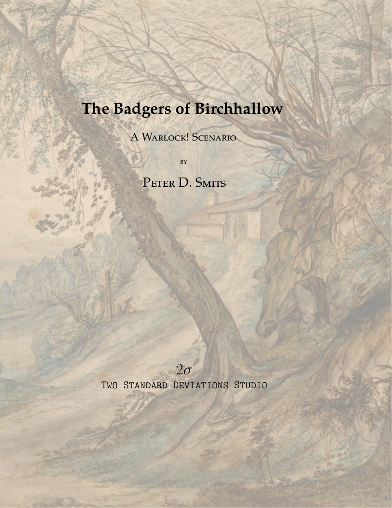
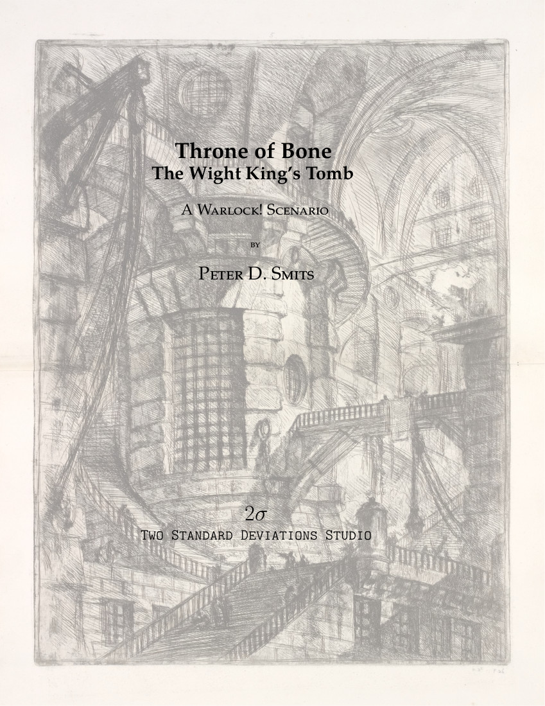
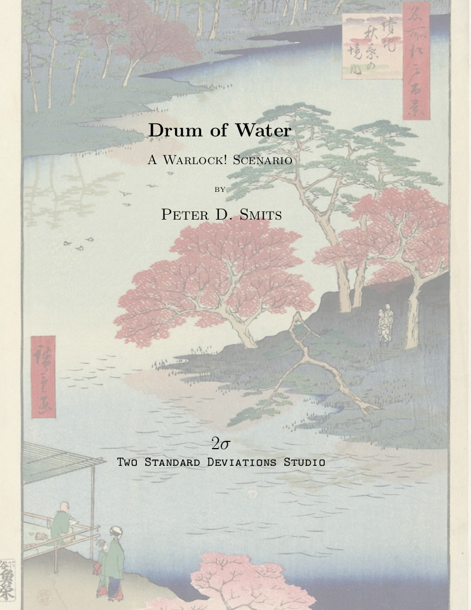

Two Standard Deviations Studio
Scenarios for Warlock!
The Badgers of Birchhallow

This investigative scenario presents a town in peril where the PCs have an opportunity to save the town from a mysterious threat. The mystery escalates from a small town investigation to a short wilderness traversal and finally to exploring a strange underground cave complex.
Birchhallow is a quaint halfling village famous for the quality of its tobacco and for hosting the annual Badger Festival, an important halfling cultural tradition. This year’s Badger Festival is coming up, and the town of Birchhallow is all aflutter in anticipation. However, the run-up to this year’s festival is not going smoothly – many of the prized giant badgers have fallen ill, the tobacco plants are suffering from a mysterious fungus, and the largest batch of cider for the festival was found to be tainted and unsuitable for consumption.
This scenario is designed for PCs in their first career but can easily be adapted for more advanced PCs. This scenario is designed as a one-shot experience, but it can easily be integrated into a larger story as intermittent events or as the launching point for a longer campaign. The halfling town of Birchhallow is usable on its own independent of this scenario, presenting a small economic center which can act as a useful home base for rural adventures.
This scenario is compatible with “Warlock! Traitor’s Edition” by Greg Saunders. This product is an independent production by Peter D. Smits/Two Standard Deviations Studio and is not affiliated with Fire Ruby Designs. The scenario can easily be converted to B/X or a similar fantasy RPG as desired.


Throne of Bone: The Wight King’s Tomb

There once was a great and terrible Wight King name Balthier Kane who wielded a bloodthirsty magic axe. In life he led the people of Petrini down from the heathlands to wage war on the goblins and humans of the plains and the forest.
The forest goblins and the humans of the plains banded together and fought Kane’s forces to a standstill. Through great sacrifice, they were able to defeat Balthier Kane and break his army. The survivors sealed Balthier Kane’s body along with those of his dark riders in a tomb filled with devious traps and cloaked behind great magical dweomers.
Recently, the magic sealing Balthier’s tomb has failed. The Wight King is awakening and his bonds are failing. Do you seek to plunder the vaults of the Wight King? Do you seek to rebind the Wight King in his prison? Or do you seek the power of the Wight King for yourself?
This is a location-based scenario describing the tomb of the evil Wight King, where he is imprisoned along with his undead lieutenants.
This scenario is designed for 3-5 PCs in their first career or early in their second career. The tomb is a series of environmental puzzles combined with combat encounters where PCs will have to make risky decisions and press their luck in order to accomplish the task before them and find reward. Random tables are provided to generate details on the Wight King, his magical axe, his lieutenants, the PCs’ motivations, and other features of the scenario.
This scenario is compatible with “Warlock! Traitor’s Edition” by Greg Saunders. The scenario can easily be converted to many other roleplaying games.

Drum of Water

A cleric hires the PCs to recover an oracle’s lost writings. The location of the oracle’s resting place is only known to an ancient sage who resides deep in the forest. This travel-focused scenario takes the players along a rugged coastline and into a dark forest in search of a lost shrine. Along their journey they will encounter many wondrous locations and make contact with an encroaching band of hobgoblins. But the PCs are not the only ones interested in what they might find. Danger lurks in hidden places.
This scenario is compatible with “Warlock! Traitor’s Edition” by Greg Saunders. The scenario can easily be converted to many other roleplaying games.